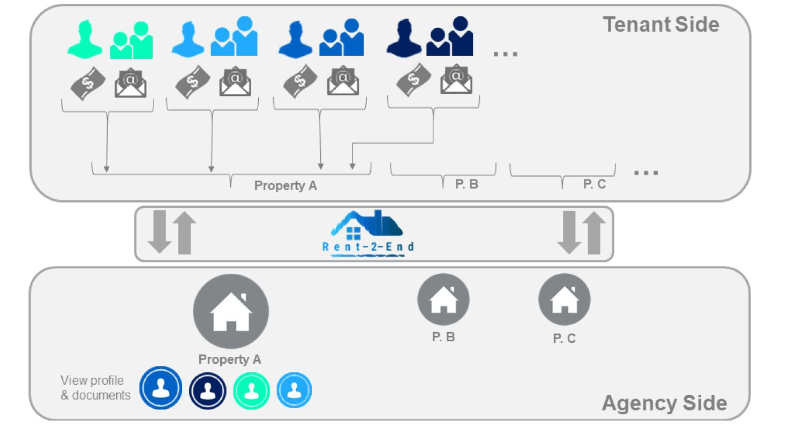

Introduction
During my final year at the University of Bristol, I enrolled in a module titled: Innovation, Entrepreneurship and Enterprise. Students are put into groups and need to create and develop a business plan for a startup company. The process lasted 12 weeks and covered the following areas: idea generation, idea selection, business plan iteration, competitor analysis, funding & valuation, exit strategy, risk assessment and pitch. As part of a team of five, we developed the idea for ‘Rent2End’.
Team: Harry Garstka, Hamish Atkins, Murat Khajabayeu, Aimen Hashim
Executive Summary
Service Description
Rent2End is a software management system for letting agencies. It solves the most frustrating part of the tenancy onboarding process; collection, management and storage of tenant data. With tenants able to upload all their documents through a single portal and in a single file format, Rent2End collates and organises the information. This software as a service is going to revolutionise how independent estate agencies work, allowing them to spend more time renting properties and less time conducting administrative tasks.
The image below shows the functionality of Rent2End. Tenants, guarantors, landlords and parents access a shared platform where contracts, inventory photos and correspondence are hosted on a central database.

Market Opportunity
Small and Medium Enterprises (SMEs) were identified for having the largest demand of our product. Our market research showed that larger organisations were more accustomed to having standard procedures to conduct meetings i.e. a recording system available throughout the offices of a company. Furthermore, the cost of a PA (to transcribe notes and summarise action points) was smaller for these organisations and the PA role was more established and practiced throughout business meetings.
- Customer need. Our market research involving letting agents shows that 68% of frustrations in the letting process are due to administrative tasks e.g. inventory checks do not use and document handling.
- Growth. The UK Private Rental Sector is growing quickly with 2.5 million residences added to the market between 2000 and 2015. The majority of this growth has been due to tech-savvy young adults and students. Our targeted segment has this demographic as their tenants.
- Untapped. Our research identified that 80% of letting agencies an end-to-end software system to manage the letting process.
Unique Sales Opportunity & Business model
- Pricing Plan. We will offer our customers a commitment free trial period of 3 months, after which we will charge a software licensing fee of £39.99 a month per office.
- Lock In Strategy. The three month trial enables us to hook estate agencies into Rent-2-End because once an agency is using the tool with all of their tenancy data in it, they will be reluctant to switch.
- Out Price. We decided to price our product to undercut our competitor, Goodlord, who charge £50 a month plus fees. A focus group supported this and recommended £40 per month as an attractive price point.
- Out Compete. Goodlord’s customers have criticised their difficult user interface and poor customer service. We will build our service to exceed them in these aspects.
- USP. Our USP is to cater for smaller independent estate agencies who cannot afford large upfront costs while providing a superior software and customer support experience.
Risk Management & Projections
- Sales. Number of new agencies by year is as follows: Year 1: 50, Year 2: 150, Year 3: 400, Year 4: 120
- Profits. Profit/Loss by year: Year 1: -£170k, Year 2: +£39.4k, Year 3: +£213.8k, Year 4: +£360.6k
- Break even. Company is anticipated to break even at 2 years and 9 months.
- Valuations. We project Rent-2-End to be worth £1.8 million in 4 years.
- Biggest risk. Functionality issues resulting in substandard sales will be avoided by working closely with letting agencies during a beta testing phase.
Funding Strategy
- Three Phases. Funding strategy is split into 3 phases:
- Phase 1. £25k is raised from the founding shareholders.
- Phase 2. Phase two relies on external investment of £150k in return for 20% share of the company.
- Phase 3. The company will depend on its subscription revenue to sustain itself in phase three onwards.
- ROI. From a £1.8 million valuation in 4 years. The return on investment from £150k for 20% would be 140%.
- Exit Strategy. Either continue growing or be acquired by a Property Industry Technology company that will wish to integrate Rent-2-End into their system.
Project Incites
- At first: Idea Quantity > Quality. During idea generation, it was important to create an atmosphere of encouragement when trying to spark new ideas. The probability of creating a viable idea is low and it was therefore necessary to focus on quantity at the beginning of the project. To do this we identified several potential industries that we thought might spark some ideas e.g. aging population, drone automation, virtual reality and property market.
- Weight factors to evaluate ideas. The down selection of ideas should take a methodical approach. We opted to use a Pugh Matrix whereby a number of evaluation factors were weighted against each idea. Some of the evaluation factors were:
- Prototype Feasibility – An MVP (minimum viable product) that could be created easily was vital as it would allows us to test the functionality of the business in contrast to a purely theoretical product.
- Commercial Viability – One of the reasons a large number of startups fail is because they do not accurately assess the viability of their product in a market.
- Access Stakeholders – Linked to the point above, easy access to stakeholders would help us assess commercial viability and allow us to iterate an MVP with customer feedback.
- Lowcost Startup – Being a student project we had a limited budget and therefore opted for ideas that were largely software based. SaaS models were popular due to their scalability and the skills background and experience of the team.
- Access idea profitability. The profitability of two potential ideas was estimated to assess which would have the biggest impact. To do this the market size, opportunities for growth, number and size of competitors, financial model were considered. The idea with the greatest potential was selected to give us the biggest advantage as we started.
- Pivot quickly. After the down selection stage for ideas, one of our ideas was a 3D VR app for letting agents that would allow potential tenants to view the rooms of a property to more detail then a single 2D image would allow. The idea was disused at several letting agencies and received negative feedback as it had already been tried and tested by some agencies.
- Find the solution directly. This was one of the most important ideas I learnt during the project. When brainstorming potential ideas and solutions, the ideas that we identified were solutions looking for a problem. Harry suggested that we talk to people in industry (e.g. property agents, dentists, private medical practitioners) directly and ask them about pain points in their businesses. By finding solutions to actual problems we were able to save time by removing ideas with limited commercial viability.
- Iterate with the customer. By developing the product directly with the customer(s), a wireframe overview could be transformed into an MVP with core features that communicated the desired functionality for industry.
The full slide deck from our presentation is included below:
Download Link